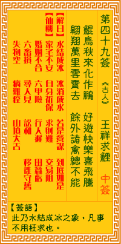

观音灵签第四十九签 【王祥求鲤】 |
 | |||
营图万事若水澌，何必悭贪苦所为 只好靜心闲处坐，待他兴变复奚疑 |
||||
| 【吉凶】 | 下下签 | 【宫位】 | 亥宫 | |
| 【签语】 | 此卦水结成冰之象，凡事不用枉求也。 | |||
| 【解曰】 | 水结成冰 冰消成水 若是营谋 到底如是 | |||
| 【仙机】 | 此签家宅不安，自身祈保，求财难，交易阻，婚姻不合，六甲险，行人迟，田蚕亏，六畜损，寻人见，讼和，移徙守旧，失物空，病难痊 ，山坟大吉。 | |||
| 【详解】 | 谋求众多的作为最终仍然冰溶于水，又何必贪图不轨深受其苦;唯一的办法只有静心安份守己;等到事情发生转变后自然能消除你之前种种的疑惑。 水冻成冰，冰还溶水，若问营谋，何如不理。此签如冰还原之象，凡事只宜苦守。 此签有”自寻死路”之意。奉劝当事人，莫心怀不轨。有些人表面上对别人很好，但其实心里满是害人的念头，只是隐藏的很好，看不出来而已。须知此举也许可以骗得过旁人，但终究骗不了自己。表里不一的人是很痛苦的，有时说了谎，却又怕被揭穿，于是再说一个谎。如此恶性循环，提心吊胆。但是内心交战，知道是”明知不可为而为之”。这种良知的谴责，岂不是自我折磨、苦不堪言?所谓”害人之心不可有”。凡事要能行得正、坐得稳，勿存妄想邪念，免得害人又害己。 | |||
| 【典故】 | 王祥是晋朝时代人，古代孝子之一，他十分孝顺父母，村里人人称赞他的孝顺行为。母亲死后，父亲再娶，继母对待王祥非常刻薄，一天 继母生病，要吃鲤鱼，叫王祥去找，进值冬天，天寒地冻，鱼儿都躲在冰底下了，王祥找不到鱼，只好睡在冰河上，因其孝心感动了天，鲤鱼破冰而出，王祥终有所获。 | |||